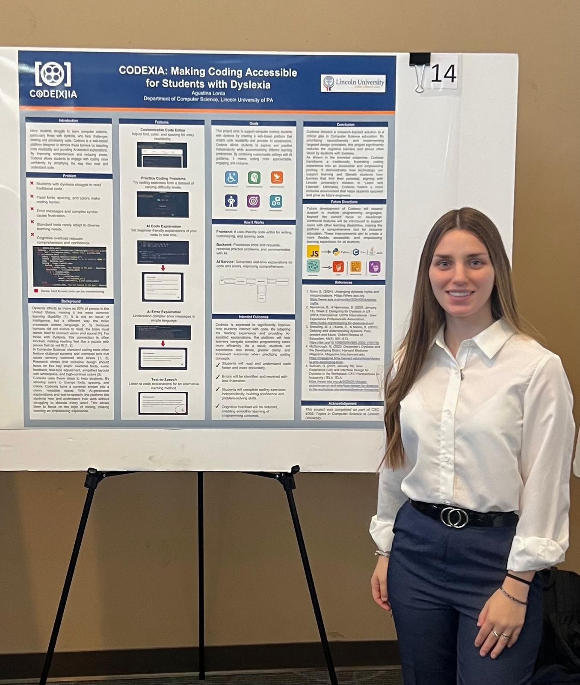

AI Powered Accessible Coding Platform for Dyslexic Learners

Codexia received an Honorable Mention at the 2026 Lincoln University Undergraduate Research Symposium after earning a perfect evaluation score from the judges. The project was recognized for its innovative combination of accessibility focused design, artificial intelligence, and educational technology aimed at supporting students with dyslexia in computer science learning.
Codexia is a full stack web application designed to make computer science education more accessible for students with dyslexia and other learning differences. The platform combines accessibility focused design with AI powered assistance, allowing users to write code, customize how code is displayed, execute programs, and receive beginner friendly explanations of both code and errors.
The application was built to address a common challenge in computer science education. Traditional coding environments often increase cognitive load through dense text, technical error messages, and limited accessibility options. Codexia reduces these barriers by giving users control over font styles, colors, and text size while providing AI generated explanations that simplify complex programming concepts. The platform also includes a collection of practice coding problems and text to speech support, creating a more inclusive learning experience for aspiring programmers.
The frontend was developed using HTML, CSS, and JavaScript and handles code editing, execution, accessibility customization, and user interaction. Accessibility settings update instantly, allowing users to personalize the appearance of code based on their individual preferences. The backend was built with FastAPI and serves as the central controller for AI requests and application logic. It securely communicates with the Google Gemini API, applies custom prompts designed for beginner learners, processes responses, and returns structured explanations to the frontend without exposing API credentials.
Google Gemini 2.5 Flash was integrated to provide personalized explanations for both code behavior and programming errors. Since every student can write different code and encounter unique mistakes, traditional rule based explanations would not be sufficient. To reduce cognitive overload, the AI was carefully guided through a custom system prompt. Responses are limited to six clearly organized steps, use simple language, avoid unnecessary technical jargon, and follow a consistent format that is easier for dyslexic learners to follow. This approach prioritizes understanding and learning rather than simply providing answers.
Explore the Source Code
Full codebase available on GitHub